{{appName}}
| SOQL | SOSL |
|---|---|
Uses query() call on Database | Uses search() on Search Indexes |
| Use: when we know which sObjects and Fields the data resides | Use: when we don't know which sObjects and Fields the data risides and want to find it in the most efficient way possible |
Want to:
|
Want to:
|
|
|
Key Points
- When building queries, list views, and reports, it's best to create filter conditions that are selective so Force.com scans only the rows necessary in the objects your queries target—the Force.com query optimizer doesn't use an index to drive queries containing unselective filter conditions, even if the fields those filter conditions reference already have indexes on them.
- Filter conditions are also unselective if they exceed the Force.com query optimizer's thresholds
- Selectivity (represents a fraction of rows from a row set) is especially important when your queries target objects containing more than one million records
- Goals will be :
- How to write selective filter conditions
- Minimize your query response times
- Optimize the database's overall performance Query optimizer FAQ
Fields with Database Indexes
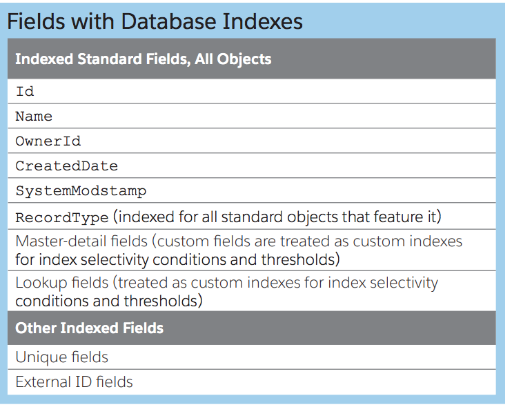Avoid Full TableScans
String status = 'Active';
if (status != null) {
Account[] accounts = [ SELECT Name
FROM Account
WHERE status__c = :status
];
System.Debug('Count: ' + accounts.size());
}
else {
// full tablescan is avoided
System.Debug('Not Found');
}
vs
// if status is null, result in full tablescan
String status = null;
Account[] accounts = [ SELECT Name
FROM Account
WHERE status__c = :status ];
System.Debug('Count: ' + accounts.size());
Force.com Query Optimizer
Generates most-efficient query based on:
- Pre-computed Statistics
- Indexs / Skinny Tables available
- Visibility: Sharing
- Uses pre-query engine to get the Statistics
- Scans through WHERE clauses, look at each individual filters, select the most-selective filter
- Determine the best leading table/index to Drive the query
Best Practices
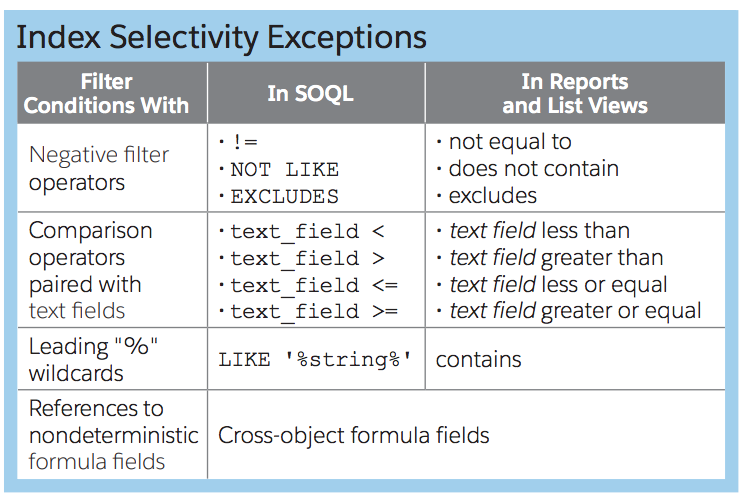Best Practices - contd.
- Provide filters that are selective: provide one or more selective filter per SOQL statement
- Avoid negative operators like:
Status__c != 'Active'tablescan will be used here. Instead use:Status__c IN ('Open', 'In-Progress') - Avoid leading wildcard ('%pen') filters
- Non-deterministic Formula (e.g: TODAY() function) fields can't be good filters - we can't index them
- Always test with more than 10K records (upto this limit, Query Optimizer will favor TableScan)
- Sort on a number or date field: If you need to use a field that does not have a number or date type, you can add a “hidden” field, populate it with converted number values, and then place an index on it
- Sort on the second field for a two-column index
- Exclude null records: If you sort on a field that might contain null records–regardless of whether you actually have any–add a filter in the WHERE clause to exclude those records. Otherwise, the Force.com query optimizer won’t consider using the index
- Evaluate optimization: Make query planning part of development process
- Consider state of database now and in future
- Data Volume matters: Query performing well in Dev Org may not perform well in PROD!
Selective Filter components
- Filters to reduce data out of the query
- Operators: avoid inefficient filter operators
- Selectivity Thresholds: filters need to meet
- Index: Fields in the filters are indexed?
- Date, Picklists, fields with wide and even distribution of values makes good filters
Example: Checkbox (with values boolean values, true/false 50:50 distribution) will not make a good index
Standard Index Selectivity Threshold
To find out using an index is efficient ?
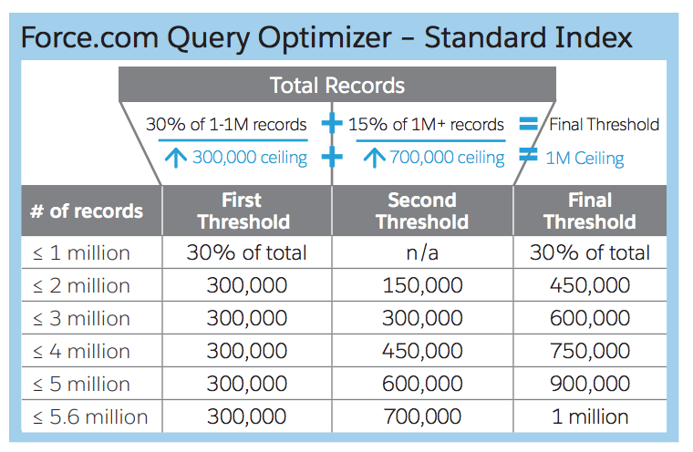Custom Index Selectivity Threshold
To find out using an index is efficient ?
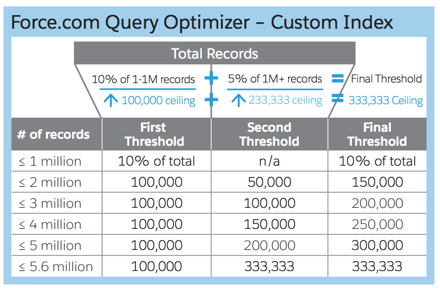Index Selectivity Conditions and Thresholds
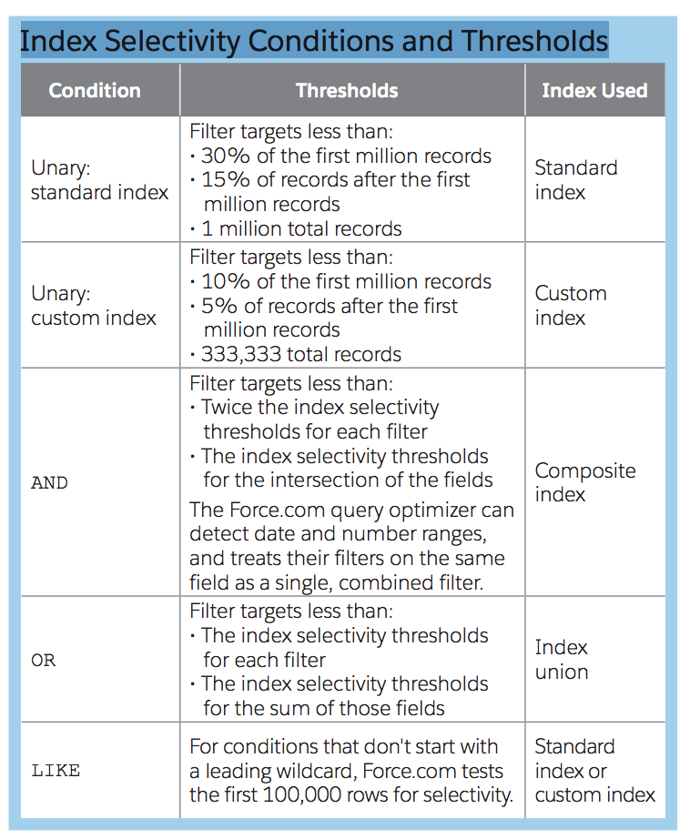Custom Index - steps
- Find out common filter conditions
- Find selective fields in those filter conditions
- Use Query-Plan tool
- Request Custom Index with Salesforce Customer Support
Query Optimization
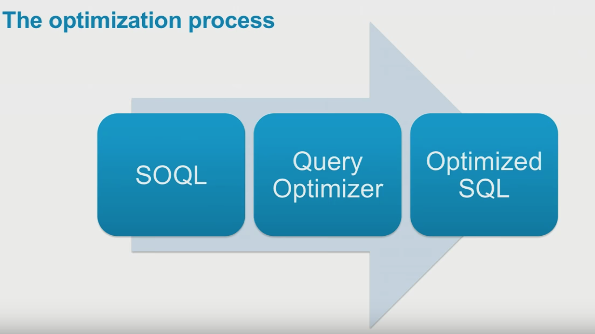Query Strategies
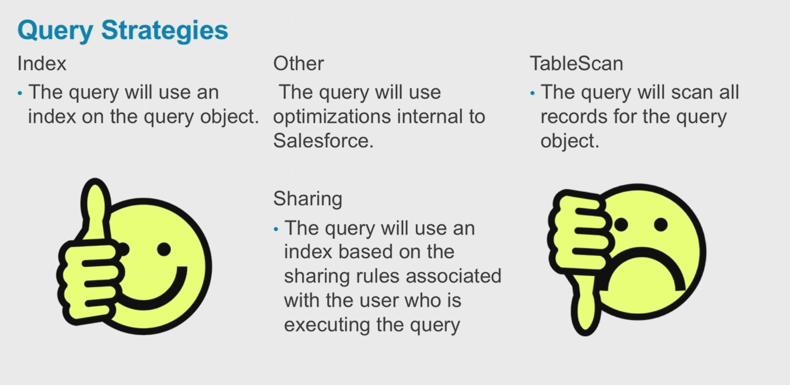Avoid Nulls
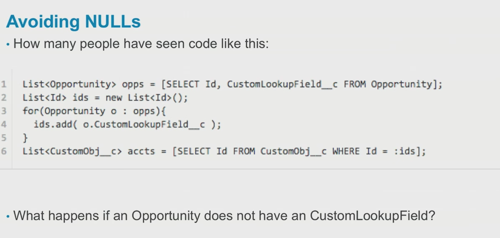Avoid Wildcards
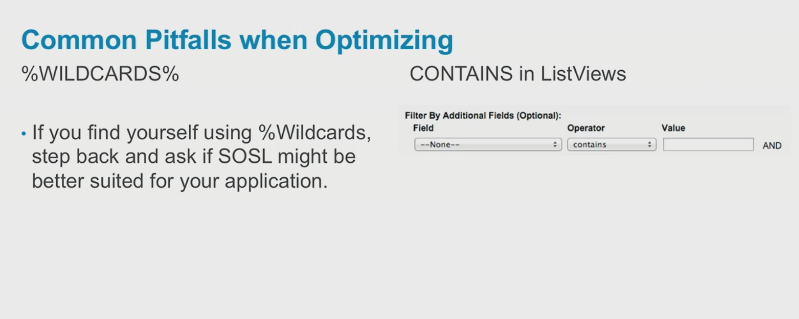Avoid negative queries
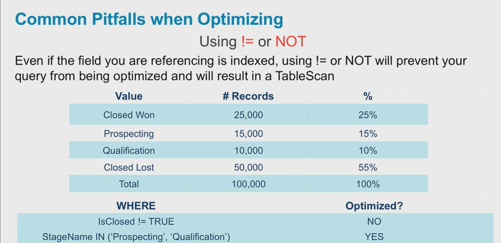Describe Opportunity

Query Plan
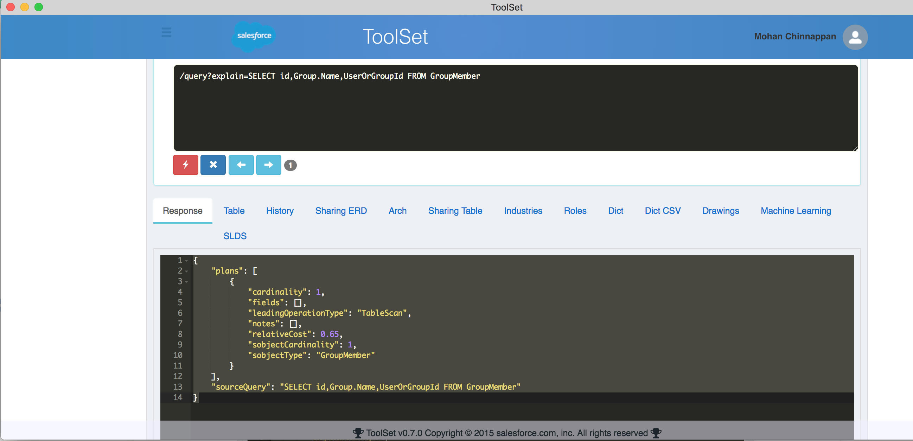Query Plan - Example - 1
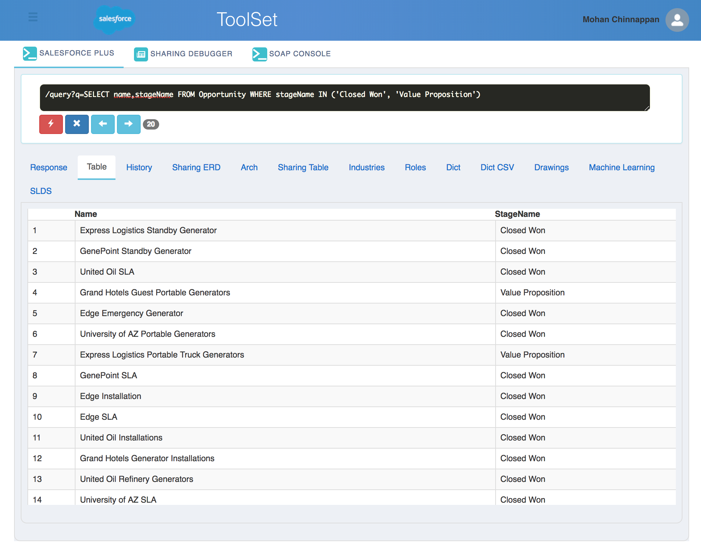Query Plan - Example - 1 - contd.
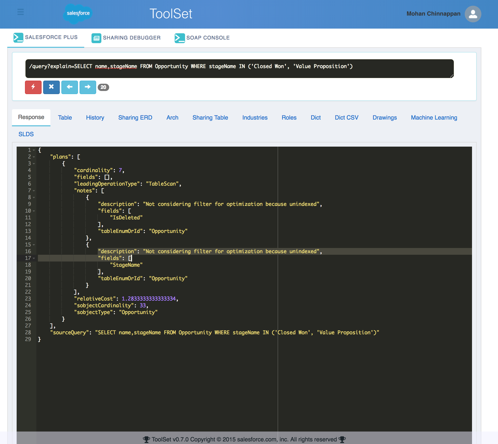Query Plan - Example - 1 - contd..
/query?explain=SELECT name,stageName FROM Opportunity WHERE stageName IN ('Closed Won', 'Value Proposition')
{
"plans": [
{
"cardinality": 7, // Estimated #records that leading op type will return
"fields": [],
"leadingOperationType": "TableScan", // primary op type that QO will use to optimize this query
"notes": [ // clues why optimizer can't use this filter
{
"description": "Not considering filter for optimization because unindexed",
"fields": [
"IsDeleted"
],
"tableEnumOrId": "Opportunity"
},
{
"description": "Not considering filter for optimization because unindexed",
"fields": [
"StageName"
],
"tableEnumOrId": "Opportunity"
}
],
"relativeCost": 1.2833333333333334,
// cost is based on the Statistics SF gathered
// plan with lowest cost will be used
// relative cost compared to QO's Selectivity threshold
// > 1 means this query would be selective! TableScan will be used!
// if more than one filter is selective - QO will pick the one with lowest
// cost to drive the query
"sobjectCardinality": 33, // approx. record count for this query
"sobjectType": "Opportunity"
}
],
"sourceQuery": "SELECT name,stageName FROM Opportunity WHERE stageName IN ('Closed Won', 'Value Proposition')"
}
Query Plan - Example - 1 - contd...
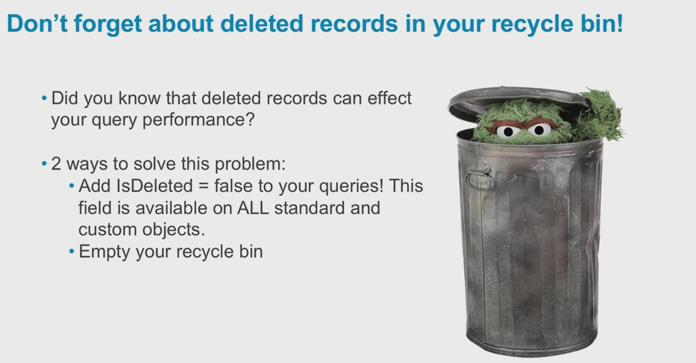Query Plan - Example - 1 - contd....
/query?explain=SELECT name,stageName FROM Opportunity WHERE stageName IN ('Closed Won', 'Value Propostion')
AND isDeleted = false
{
"plans": [
{
"cardinality": 3,
"fields": [],
"leadingOperationType": "TableScan",
"notes": [
{
"description": "Not considering filter for optimization because unindexed",
"fields": [
"IsDeleted"
],
"tableEnumOrId": "Opportunity"
},
{
"description": "Not considering filter for optimization because unindexed",
"fields": [
"StageName"
],
"tableEnumOrId": "Opportunity"
},
{
"description": "Not considering filter for optimization because unindexed",
"fields": [
"IsDeleted"
],
"tableEnumOrId": "Opportunity"
}
],
"relativeCost": 0.9944444444444444,
"sobjectCardinality": 33,
"sobjectType": "Opportunity"
}
],
"sourceQuery": "SELECT name,stageName FROM Opportunity WHERE stageName IN ('Closed Won', 'Value Propostion') AND isDeleted = false"
}
Playing with Query Optimizer
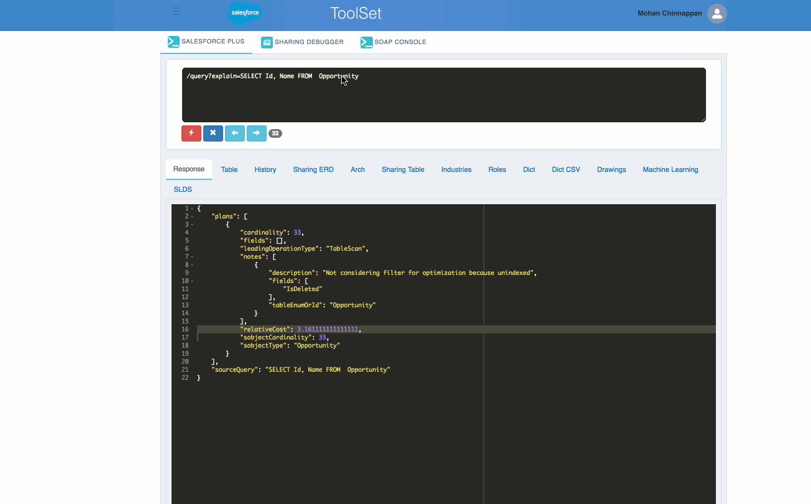
Playing with Query Optimizer - 2
Save the important Queries and find out the Query Plan on a regular basis
Playing with Query Optimizer - 3

Query-Plan Tool
- If #records in the sObject is less than 10K, Optimizer will opt into TableScan
- The Query Plan tool will show a list of available plans that our Query Optimizer can utilize for the query provided and will be arranged by cost ascending. Each Plan will contain information on Cardinality (number of rows returned by each operation in an execution plan),sobjectCardinality(number of the rows in the sObject participating in the query), Operation Type, Cost, sObject Type, and more. Each plan has a “Leading Operation Type”, for example, Field Index or Full Table Scan. The plan with the lowest cost is the plan that is used for driving the query execution.